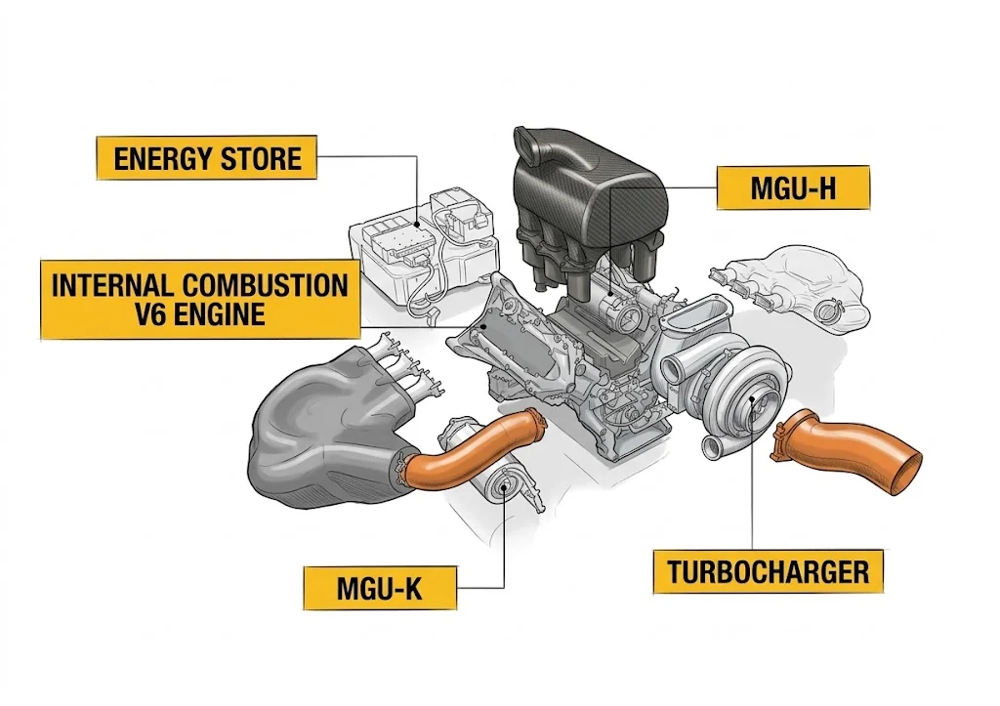
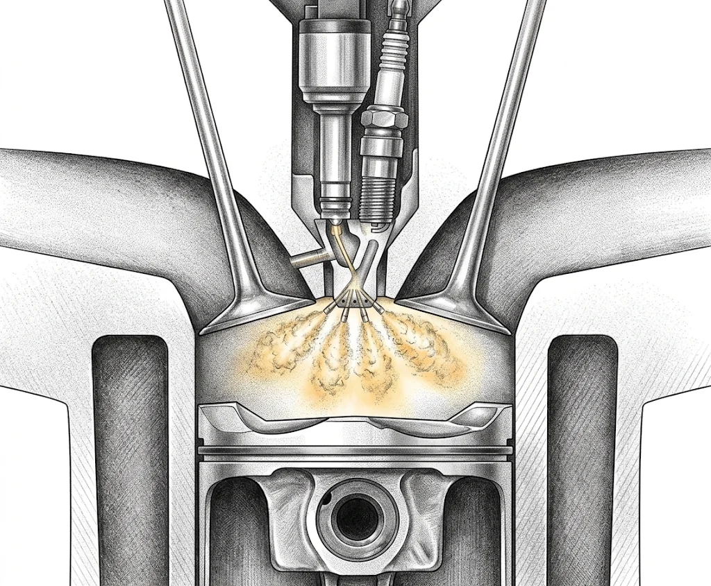
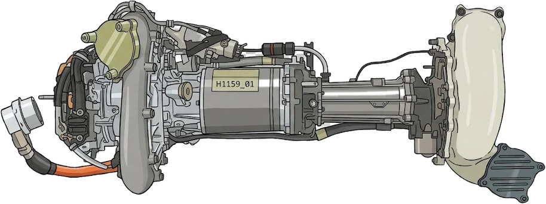
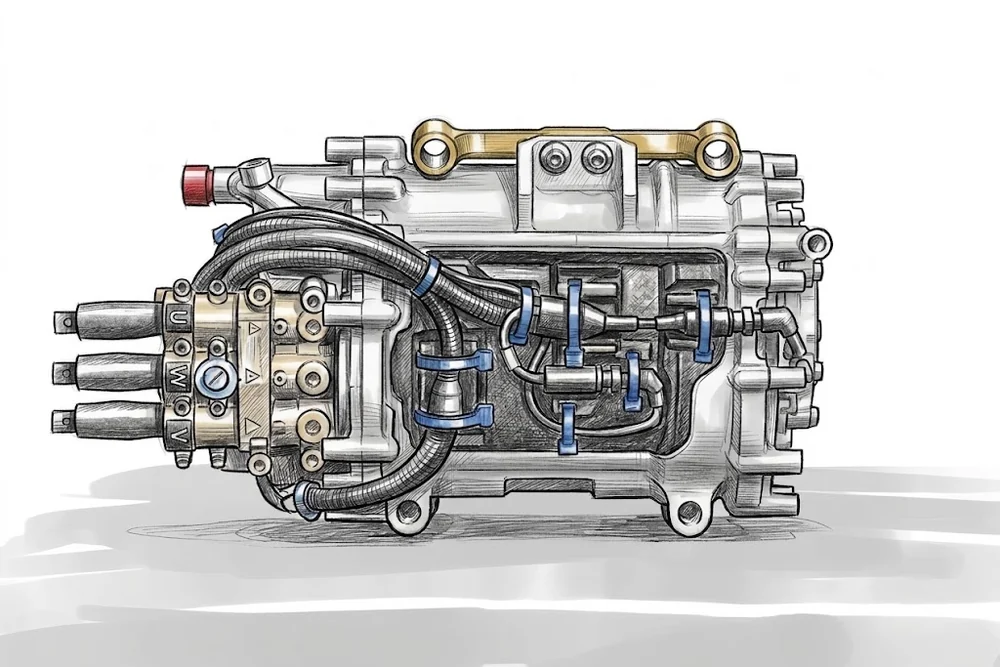

Powertrain · Article · 2026
Why F1 engines burn lean
Since 2014, Formula 1 has limited how much fuel can go into the engine, not how big the engine is. That one rule turned power into a question of efficiency. It explains every combustion choice of the hybrid era: lean mixtures, pre-chamber ignition, high compression and big turbos. I built a 0D model of the 1.6 L V6 to put numbers on each choice, and on what changes in 2026.
Based on my coursework for Propulsion Systems in the MSc in Advanced Motorsport Engineering at UPM. The model is my own and uses public data only. Manufacturers do not publish λ, peak pressure or burn duration, so the numbers show trends, not a real F1 engine.
The rule behind it all
With the fuel flow fixed, power is efficiency times fuel. Every point of efficiency is power.

Fuel flow, not displacement
Ne = ηe · ṁf · Hc
From 2014 to 2025 the V6 could burn at most 100 kg/h above 10,500 rpm. With a typical lower heating value of 43 MJ/kg that is 1,194 kW of chemical power. Above 10,500 rpm the fuel stops rising and friction keeps growing, so peak power sits there, far below the 15,000 rpm limit.
So each point of efficiency is worth about 12 kW. A V8 from 2013 was near 29% efficient. Mercedes claimed more than 50% on the dyno in 2017. Combustion is where most of that gap was closed.
Lean burn, and where it stops working
A lean mixture raises efficiency. It also burns more slowly, and past a point the slow burn wins.
One cylinder of the V6 at 10,500 rpm, r = 18, 52.9 mg of fuel per cycle, combustion phased for best efficiency (MBT) unless the knock limit is on.
Two effects pulling in opposite directions
More air per gram of fuel means more diatomic gas and lower temperatures, so the ratio of specific heats γ rises. In the model that alone is worth 4.4 points from λ = 1 to λ = 2. Lower heat loss to the walls adds almost nothing, about a tenth of a point, because the extra gas mass and pressure cancel most of the cooler temperatures.
But laminar flame speed collapses as the mixture leans out: 0.28 m/s at λ = 1, 0.03 m/s at λ = 2. A slow burn releases its heat late, deep in the expansion stroke. With a spark plug the optimum is λ ≈ 1.4 at 49.2%. By λ = 2 the efficiency has fallen to 41.8%.
Move the slider, then switch to the pre-chamber.
The pre-chamber
A small chamber in the cylinder head holds the spark plug. Its flame leaves as jets that light the main chamber in many places at once.

Ignition from many points
The pre-chamber connects to the main chamber through a nozzle with several small holes. The holes quench the flame, so what reaches the main chamber is hot gas full of active radicals. It works as a spread-out ignition source with far more energy than a spark. MAHLE measured 30 to 50% shorter combustion and a best efficiency at λ ≈ 1.6–1.7. Honda measured 40% shorter combustion.
F1 allows one injector per cylinder, so the pre-chamber cannot have its own. The main injector aims part of its spray at the nozzle, and about 3% of the fuel ends up inside.
In the model I gave the pre-chamber a 40° burn at λ = 1 instead of 60°, and made it lengthen half as fast as the mixture leans out. Its optimum moves to λ ≈ 1.8 at 52.0%. The 2.8-point gain is about 35 kW at 100 kg/h, close to the 40 kW Honda's engineers credit to their pre-chamber work.
- 2014Mercedes, reported by the press, never confirmed
- 2015Ferrari, MAHLE system from the Canadian GP
- 2017Honda confirms it on the RA617H
- 2018Honda “fast combustion”: jets aimed at the edge of the chamber
Adding knock to the model
The first version of this study set the combustion phasing by hand. This one adds an unburned zone and a knock criterion, so the knock-limited phasing comes out of the model.
Track the end gas
The gas the flame has not reached yet is compressed by the cylinder pressure. I follow its temperature with an isentropic compression and the real heat capacity of the fresh charge.
Run the autoignition clock
I = ∫ dt / τ(p, Tu, φ)
Livengood–Wu: if I reaches 1 before 95% of the fuel has burned, the cylinder knocks. τ comes from an iso-octane correlation that includes the mixture strength.
Calibrate one number
As published, the correlation says an F1 engine could not run at all: it is used at ten times the pressure it was fitted for. One factor K = 14 makes a pre-chamber engine at λ = 1.6, r = 18 run within 4° of best phasing. Everything else is a prediction, shown with K/2 and 2K.
r = 18, 100 kg/h. Solid: knock-limited. Dotted: best phasing without knock. Bands: K/2 to 2K.
Lean mixtures keep knock away
At r = 18 the earliest knock-free CA50 moves from 15° at λ = 1 to 8–9° from λ = 1.8, even though the boost pressure rises. Less fuel slows autoignition more than the extra pressure speeds it up. The penalty against best phasing drops from 1.2 points to 0.1.
The optimum survives
Knock-limited peak: 51.9% at λ ≈ 1.8–1.9 with the pre-chamber, 48.7% at λ ≈ 1.4–1.5 with a spark plug. The gap grows to 3.2 points, because the spark plug is stuck at richer mixtures, where knock bites harder.
Compression is worth less than it looks
Going from r = 16 to 18 gains 0.9 points with ideal phasing at λ = 1.5. Once knock is in, r = 18 has to retard 4° and r = 16 does not, so the gain is 0.6.
What a 0D model cannot show
Burning faster gives the end gas less time but compresses it sooner, and the two almost cancel. So the model gives the pre-chamber nearly no knock advantage, while Honda measured +1.8 points of compression ratio. The title of their paper explains why: the jets light the edge of the chamber and remove the unburned gas where knock starts. That is a spatial effect, and a single unburned zone cannot capture it.
2026: less fuel, no MGU-H
The fuel limit becomes an energy limit of 3,000 MJ/h, 30% less. The compression ratio drops from 18 to 16, the MGU-H goes, and the MGU-K grows from 120 to 350 kW.
The loss is the fuel
Indicated power falls 32%, from 614 to 419 kW. About 30 points of that are the fuel limit and about 2 are the compression ratio. With 92% mechanical efficiency the 2026 engine makes about 385 kW, near the 400 kW Honda quotes.
Knock stops limiting
Less air and fuel per cycle drop the pressure at intake valve closing from 4.2 to 2.9 bar. The model no longer needs to retard any 2026 case, so the net efficiency loss is 0.9 points, not 1.2.
Room to lean out, if the turbo can
λ = 1.8 gains 0.7 points at 3.45 bar, well under the 4.8 bar limit. Without the MGU-H to spin it up, the turbo has to find that air from exhaust energy alone, which is hardest in transients.
The compression-ratio row, in kilowatts
In 2026 rivals suspected one engine met r = 16 cold and exceeded it hot. One extra point of hot compression ratio is worth 0.5 points of efficiency and about 4 kW, roughly 1% of engine power. In the model it does not trigger knock in 2026, so the gain is kept. Small, but in F1 that is enough for a fight.


The model, and its limits
A closed-cycle 0D model of one cylinder, written in Python. It isolates the effect of each design variable, not the performance of a real engine.
Geometry and operating point
Bore 80 mm, stroke 53 mm, 118 mm conrod (assumed), 10,500 rpm, 52.9 mg of fuel per cycle. Trapped air sets the intake pressure at 340 K.
Real gas properties
Internal energies from Cantera for fresh air and for burned gas at each λ, so γ changes with temperature and mixture on its own.
Heat release and duration
Wiebe law (a = 5, m = 2). Duration scales with laminar flame speed: exponent 0.5 for the spark plug, 0.25 for the pre-chamber. Changing them by ±0.1 moves the pre-chamber optimum between λ 1.7 and 2.0, but it always sits leaner than the spark plug.
Heat loss
Woschni correlation with 450 K walls. Wall losses come out at 9–11% of fuel energy, normal for a full-load SI engine.
Knock
Unburned zone plus Livengood–Wu with the He et al. iso-octane correlation, scaled by one factor K.
What it leaves out
Gas exchange, cycle-to-cycle variation, dissociation, hot spots in the end gas and friction. The output is gross indicated efficiency, above what an engine delivers at the crank.